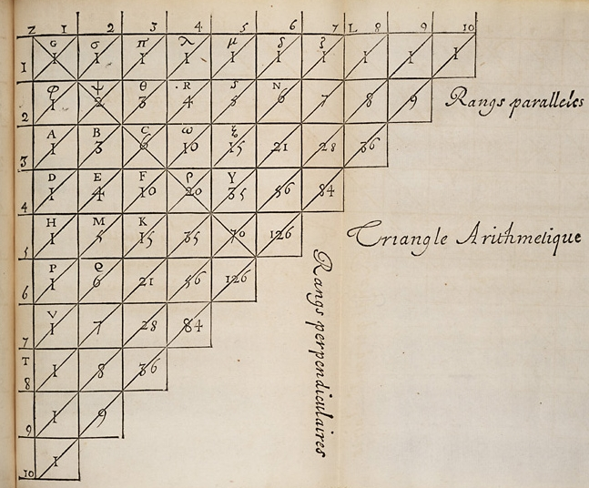
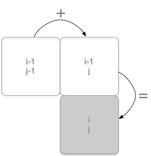
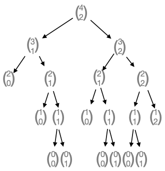
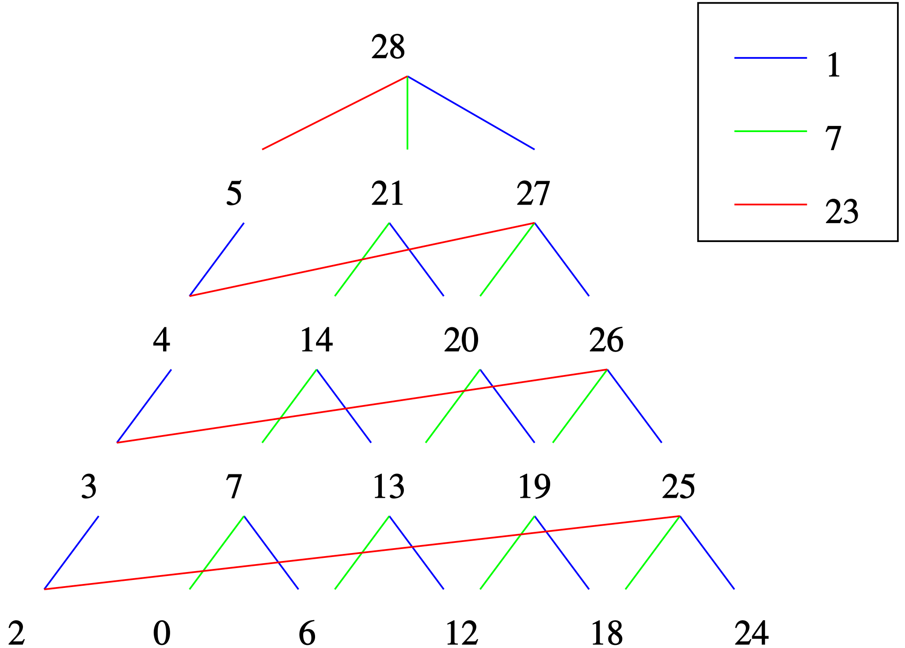
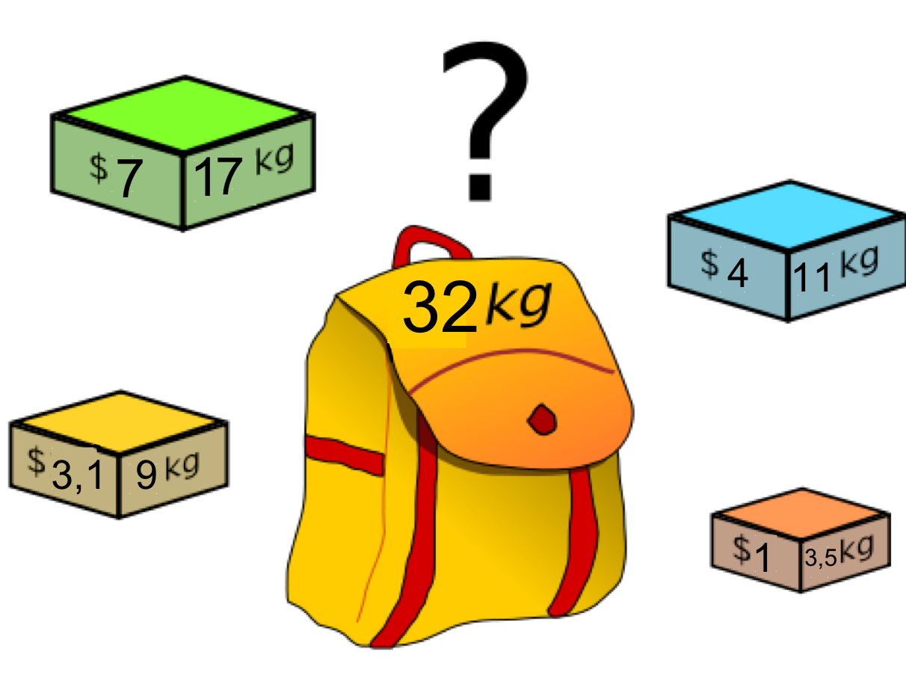
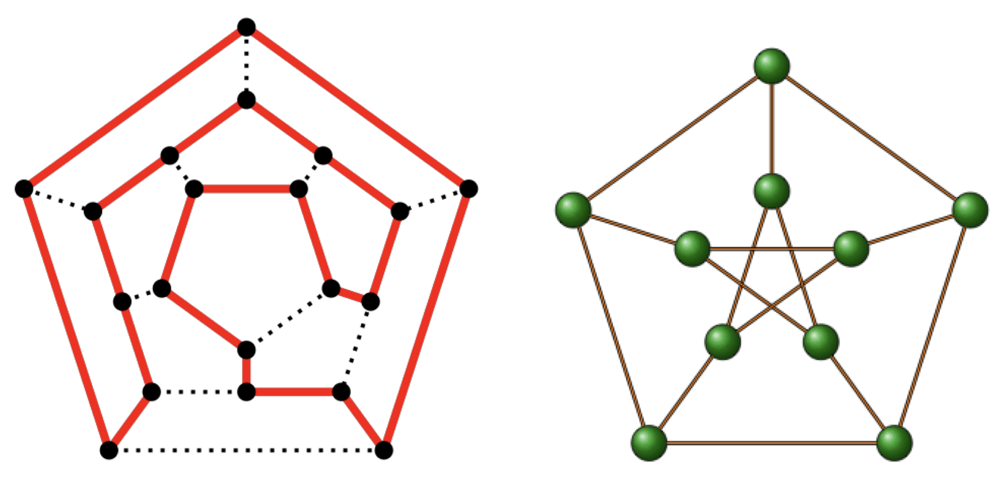
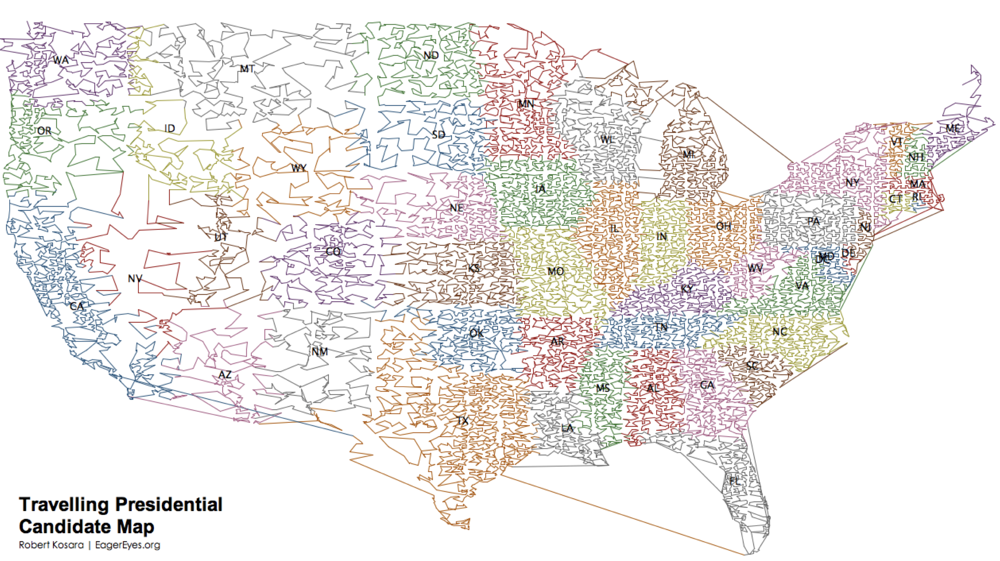

algorithmes avancés
Pré requis
On verra dans cette page:
- la programmation dynamique
- les algorithmes gloutons
- un exemple d’algorithme avec recherche locale. Pour la résolution d’un problème de TSP (Traveling salesman problem)
- Les classes de problèmes de decision, P, NP, NP-complet
Programmation dynamique
Principe de la méthode
La programmation dynamique permet de résoudre plus efficacement des problèmes d’optimisation.
La programmation dynamique consiste à résoudre un problème en le décomposant en sous-problèmes, puis à résoudre les sous-problèmes, des plus petits aux plus grands en stockant les résultats intermédiaires, et en suivant une règle d’optimalité. La solution donnée par un algorithme glouton est optimale, mais n’est pas forcement la solution la plus optimale au problème.
Cela diffère des algorithmes de type diviser pour régner par le fait que les sous-problèmes considérés ne sont pas nécessairement indépendants. Pour les algorithmes de type diviser pour régner, on partitionne le problème en sous problèmes indépendants, qui seront résolus recursivement. Puis on combine leurs solutions pour résoudre le problème initial. Mais cela peut revenir à résoudre plusieurs fois le même sous-problème, et peut être parfois inefficace.
Pour la méthode de programmation dynamique, on va se rappeler des sous-problèmes résolus (de leurs solutions), et eviter de les re-calculer.
Cette méthode a été introduite au début des années 1950 par Richard Bellman.
Comment s’y prendre pour mémoriser les solutions?
La méthode demande alors de mémoriser ce résultat intermédiaire dans un dictionnaire ou un tableau afin de le réutiliser au besoin. Sans avoir besoin de les recalculer. La complexité spatiale augmente, mais celle temporelle diminue.
Cette méthode s’appelle : la mémoïzation.
Elle va permettre d’eviter la répétition des calculs que l’on voit dans l’exemple suivant, le triangle de Pascal. Sans cette reduction, la compléxité de l’algorithme est exponentielle (voir l’arbre des calculs, présenté plus bas).
Ce problème de répétitions a été vu avec l’exemple du calcul des termes de la suite de Fibonacci.
Limites de la méthode diviser pour regner : le triangle de Pascal
Principe
En mathématiques, le triangle de Pascal est une présentation des coefficients binomiaux dans un triangle. Il fut nommé ainsi en l’honneur du mathématicien français Blaise Pascal. Il est connu sous l’appellation « triangle de Pascal » en Occident, bien qu’il fût étudié par d’autres mathématiciens, parfois plusieurs siècles avant lui.

premières lignes du triangle de Pascal
voir compléments sur la page wikipedia : Lien
Un coefficient quelconque du triangle, situé à la ligne i et à la colonne j est calculé à partir de la formule de récurrence : (i et j superieurs à 1)
$$C\left(\begin{matrix}i\\\j\end{matrix}\right)=C\left(\begin{matrix}i-1\\\j-1\end{matrix}\right)+C\left(\begin{matrix}i-1\\\j\end{matrix}\right)$$
Algorithme récursif non optimisé
Les algorithmes de type diviser pour regner sont souvent exprimés de manière recursive.
On peut alors tester le programme:
On remarque que l’on calcule souvent les mêmes coefficients binomiaux :

arbre de calcul des coefficients pour n=4 p=2
On voit que certains termes, comme celui (n=2, p=1) est calculé plusieurs fois. Dans les branches (n=3, p=1) et (n=3, p=2). Cela est du au fait que les 2 branches de l’arbre sont indépendantes.
La mémoïzation consistera alors à stocker dans un tableau les solutions pour les sous-problèmes afin de ne pas les recalculer…
Algorithme avec mémoïzation
Chaque valeur du triangle n’est calculée qu’une seule fois.
L’algorithme non recursif, avec mémoïzation est plus efficace.
Problèmes de décision et algorithmes gloutons
Un algorithme glouton est un algorithme qui suit le principe de réaliser, étape par étape, un choix optimum local, afin d’obtenir un résultat optimum global.
Le problème du rendu de monnaie
Le problème du rendu de monnaie est un problème d’algorithmique. Il s’énonce de la façon suivante : étant donné un système de monnaie (pièces et billets), comment rendre une somme donnée de façon optimale, c’est-à-dire avec le nombre minimal de pièces et billets ?
Par exemple, la meilleure façon de rendre 7 euros est de rendre un billet de cinq et une pièce de deux, même si d’autres façons existent (rendre 7 pièces de un euro, par exemple).

Image by conmongt-pixabay
Voir l’animation sur le site mpechaud.fr
Sur l’animation, l’algorithme traite TOUTES les combinaisons de rendu de monnaie. L’arbre des appels recursifs montre que la complexité de cette méthode croit exponentiellement avec la taille des paramètres d’entrée.
Contrairement aux problèmes étudiés précédement (tri d’un tableau, calcul de xn…), où il y avait toujours une unique solution, dans les problèmes d’optimisation, il peut y avoir des solutions valides (satisfaisant les contraintes) non optimales, une ou plusieurs solutions (valides), optimales (minimisant/maximisant une certaine mesure), voire pas du tout de solution valide.
Si la taille du ou des paramètres en entrée est importante, il n’y a pas d’algorithme déterministe efficace. (on ne peut pas trouver LA solution au problème en parcourant toutes les solutions possibles car la complexité est trop grande). Voir paragraphe suivant sur la recherche exhaustive.
On utilise alors d’autres stratégies, qui donneront parfois une solution, parfois une solution optimale. C’est ce que l’on réalise avec l’utilisation d’un algorithme glouton.
Le problème du rendu de monnaie est NP-difficile relativement au nombre de pièce et billet du système monétaire considéré. (voir annexe).
Algorithme exhaustif
Une première méthode, SANS stratégie, pourrait être d’envisager TOUTES les combinaisons. On pourrait alors imaginer que l’on commence par rendre la monnaie avec une des pieces de la caisse (pas forcément la plus haute), puis on choisit une autre piece possible (egale ou moins haute), … Jusqu’à ce que la somme à rendre soit nulle. On envisage ainsi toutes les combinaisons possibles, ce qui, avec une valeur élevée de la somme à rendre, et un grand nombre de pieces dans la caisse, va donner un très grand nombre de combinaisons. On selectionne enfin la meilleure des solutions (celle optimale).
Par exemple, pour rendre 7 euros, voici toutes les combinaisons possibles (la solution optimale étant la première):
- 5 + 2
- 5 + 1 + 1
- 2 + 2 + 2 + 1
- 2 + 2 + 1 + 1 + 1
- 2 + 1 + 1 + 1 + 1 + 1
- 1 + 1 + 1 + 1 + 1 + 1 + 1
On peut représenter cette recherche de solutions à l’aide d’un arbre: La racine est la somme à rendre. On descend dans l’arbre en faisant des choix, ce qui diminue la somme. Lorsque l’on arrive sur une feuille avec 0, c’est que l’on a trouvé une solution. La solution otimale est donnée ici en rendant 4 pieces de 7 (trajectoire presque verticale de 28 à 0):

wikipedia - Problème_du_rendu_de_monnaie
- Représenter, comme sur l’image ci-dessus, une partie de l’arbre des combinaisons pour rendre un montant égal à 15, en choisissant une à une chaque piece de la caisse
[1, 7, 9]. Quelle est la trajectoire dans cet arbre selon la méthode gloutonne? Quel est le choix optimal?
Un programme python exprimerait le rendu sous forme de liste:
heuristique glouton
Le problème est traité de cette manière en 1ere NSI:
Une caisse contient un nombre suffisant de pieces pour rendre la monnaie. Cette caisse est représentée par une liste triée en ordre croissant, et sera parcourue de la piece de valeur la plus élevée vers la moins élevée.
Supposons que l’on dispose d’une fonction recursive, qui pour chaque piece de la caisse fait le choix suivant:
- soit la piece est inférieure à la monnaie à rendre: alors on soustrait la piece à la somme à rendre et on appelle la fonction de manière récursive avec cette même caisse, et la nouvelle somme à rendre.
- soit la piece est supérieure à la somme à rendre. on retire la piece de la caisse. Et on appelle de manière récursive la fonction avec la nouvelle caisse, et la même somme.
La condition de base sera: la liste de pieces est vide.
On utilisera une liste rendu pour placer les pieces rendues.
Un système monétaire non canonique:
- Que renvoie la fonction pour rendre 53 pences avec le système imperial où
pieces = [240,60,30,24,12,6,3,1]?- Le rendu est-il optimal avec cette méthode? Ou bien existe t-il une autre façon de rendre la monnaie, avec moins de pieces?
Conclusion: Suivant le système de pièces, l’algorithme glouton est optimal ou pas. Dans le système de pièces européen (en centimes : 1, 2, 5, 10, 20, 50, 100, 200), où l’algorithme glouton donne la somme suivante pour 37 : 20+10+5+2, on peut montrer que l’algorithme glouton donne toujours une solution optimale. wikipedia
Algorithme glouton vs programmation dynamique
Un algorithme glouton fait un choix local immédiat et irrévocable à chaque étape, sans revenir en arrière. Pour le rendu de monnaie, il prendrait systématiquement la plus grande pièce possible. C’est simple et rapide, mais pas toujours optimal.
Exemple : rendre 15 avec {1, 7, 9} → le glouton prend 9, puis 6 × 1 = 7 pièces.
La programmation dynamique construit au contraire un tableau de solutions optimales pour tous les sous-problèmes, en s’appuyant à chaque étape sur les résultats déjà calculés. Elle garantit l’optimum.
Algorithme de programmation dynamique — rendu de monnaie
On cherche à rendre un montant x avec un minimum de pièces, choisies parmi n valeurs possibles.
Approche ascendante : on construit une table de solutions optimales pour tous les montants de 0 à x. On commence par les petits montants, puis on monte progressivement. Chaque montant est rendu de manière optimale en s’appuyant sur les résultats déjà calculés.
Principe : pour rendre le montant w, il faut au moins une pièce, à choisir parmi les n pièces disponibles. Une fois cette pièce choisie de valeur p, le montant restant w - p est strictement inférieur à w — on sait donc déjà le rendre de façon optimale (c’est déjà dans le tableau). Il suffit d’essayer les n possibilités et de retenir celle qui minimise le nombre total de pièces :
Exemple : rendre 15 avec des pièces de {1, 7, 9}
Remplissage du tableau ligne par ligne
dp[i][w] = nombre minimum de pièces pour rendre exactement w avec les i premiers types de pièces. ∞ signifie “impossible”.
Ligne 0 — sans pièce :
dp[0][0]= 0 : rendre 0€ ne nécessite aucune piècedp[0][w]= ∞ pour toutw > 0: impossible de rendre quoi que ce soit sans pièce
Ligne 1 — pièces disponibles : {1} :
dp[1][w]=wpour toutw: il faut exactementwpièces de 1€
Ligne 2 — pièces disponibles : {1, 7} :
- Pour
w < 7: la pièce de 7€ est inutilisable → on recopie la ligne 1 - Pour
w ≥ 7: on compare “ne pas prendre la pièce de 7€” (dp[1][w]) et “la prendre” (dp[2][w-7] + 1) :w = 7: min(7, dp[2][0]+1) = min(7, 1) = 1w = 8: min(8, dp[2][1]+1) = min(8, 2) = 2w = 9: min(9, dp[2][2]+1) = min(9, 3) = 3w = 10: min(10, dp[2][3]+1) = min(10, 4) = 4w = 11: min(11, dp[2][4]+1) = min(11, 5) = 5w = 12: min(12, dp[2][5]+1) = min(12, 6) = 6w = 13: min(13, dp[2][6]+1) = min(13, 7) = 7w = 14: min(14, dp[2][7]+1) = min(14, 2) = 2w = 15: min(15, dp[2][8]+1) = min(15, 3) = 3
Note : quand on “prend” la pièce de 7€, on consulte
dp[2][w-7](et nondp[1][w-7]), car on peut réutiliser la même pièce autant de fois qu’on veut.
Ligne 3 — pièces disponibles : {1, 7, 9} :
- Pour
w < 9: la pièce de 9€ est inutilisable → on recopie la ligne 2 - Pour
w ≥ 9: on compare “ne pas prendre la pièce de 9€” (dp[2][w]) et “la prendre” (dp[3][w-9] + 1) :w = 9: min(dp[2][9], dp[3][0]+1) = min(3, 1) = 1w = 10: min(dp[2][10], dp[3][1]+1) = min(4, 2) = 2w = 11: min(dp[2][11], dp[3][2]+1) = min(5, 3) = 3w = 12: min(dp[2][12], dp[3][3]+1) = min(6, 4) = 4w = 13: min(dp[2][13], dp[3][4]+1) = min(7, 5) = 5w = 14: min(dp[2][14], dp[3][5]+1) = min(2, 6) = 2w = 15: min(dp[2][15], dp[3][6]+1) = min(3, 7) = 3
Tableau complet
| w=0 | w=1 | w=2 | w=3 | w=4 | w=5 | w=6 | w=7 | w=8 | w=9 | w=10 | w=11 | w=12 | w=13 | w=14 | w=15 | |
|---|---|---|---|---|---|---|---|---|---|---|---|---|---|---|---|---|
| sans pièce | 0 | ∞ | ∞ | ∞ | ∞ | ∞ | ∞ | ∞ | ∞ | ∞ | ∞ | ∞ | ∞ | ∞ | ∞ | ∞ |
| + pièce 1€ | 0 | 1 | 2 | 3 | 4 | 5 | 6 | 7 | 8 | 9 | 10 | 11 | 12 | 13 | 14 | 15 |
| + pièce 7€ | 0 | 1 | 2 | 3 | 4 | 5 | 6 | 1 | 2 | 3 | 4 | 5 | 6 | 7 | 2 | 3 |
| + pièce 9€ | 0 | 1 | 2 | 3 | 4 | 5 | 6 | 1 | 2 | 1 | 2 | 3 | 4 | 5 | 2 | 3 |
La réponse se lit dans la dernière case : dp[3][15] = 3 pièces (7 + 7 + 1).
Complexité
Comment cet algorithme parvient-il à reduire le nombre de combinaisons pour rendre la monnaie?
Le tableau comporte n × W cases (ici 3 × 15 = 45), chacune calculée en temps constant. La complexité est donc O(n · W) — à comparer avec la méthode exhaustive en O(2ⁿ) :
| n | W | O(n · W) | O(2ⁿ) |
|---|---|---|---|
| 10 | 100 | 1 000 | 1 024 |
| 30 | 500 | 15 000 | ≈ 10⁹ |
| 100 | 500 | 50 000 | ≈ 10³⁰ |
Pour des instances réalistes, la programmation dynamique est des milliards de fois plus rapide que la recherche exhaustive.
Remarques:
- La subtilité importante :
O(n·W)ressemble à du polynomial, mais W peut être très grand. Si les poids sont exprimés en grammes et que le sac fait 100 kg, W = 100 000. C’est pour ça que le sac à dos reste un problème dit NP-complet dans le cas général, c’est-à-dire difficile à résoudre. Cependant pour certains systèmes de monnaie dits canoniques, l’algorithme glouton est optimal. - Regarder aussi: le probleme de l’allocation des ressources pour un systeme d’exploitation: l’algorithme du banquier
Le problème du sac à dos
Un problème très similaire est celui du sac-à-dos. Supposons que vous découvriez la caverne d’Ali Baba (et des 40 voleurs), il y a une infinité d’objets de valeur v1, v2, · · · , vn mais chaque objet de valeur vi a un poids de pi. Comment remplir votre sac-à-dos avec le contenu qui rapportera le plus, sachant que votre sac ne supporte qu’un poids W?

illustration du probleme du sac à dos
Voir l’article et l’animation sur Interstices
Adapter la stratégie du rendu de monnaie
Heuristique gloutonne
Structure de données:
| rendu de monnaie | sac à dos |
|---|---|
| [Nbre de piece, [pieces de 1, pieces de 2, pieces de 5, …]] | [Gains cumulés, [articles 1, articles 2, articles 3, …]] |
Exemple:
Déterminer le choix idéal pour un sac à dos de capacité 32kg, avec les objets suivants, proposés en nombre infini: `[{“valeur”: 7, “poids”:17},{“valeur”: 4, “poids”:11},{“valeur”: 3.1, “poids”:9},{“valeur”: 1, “poids”:3.5}]
| Objets | 1 | 2 | 3 | 4 |
|---|---|---|---|---|
| valeur | 7 | 4 | 3.1 | 1 |
| poids (kg) | 17 | 11 | 9 | 3.5 |
| ratio val/poids | 0.41 | 0.36 | 0.34 | 0.29 |
La stratégie, sur le modèle du rendu de monnaie sera la suivante:
- classer les objets dans l’ordre décroissant de leur taux de valeur (taux de valeur = valeur / masse). Ainsi le premier élément de la liste sera celui ayant le meilleur rapport valeur/masse.
- on prend le premier élément de la liste, puis le deuxième, etc., tant que le sac peut encore les contenir.
Algorithme de type programmation dynamique
Nous allons chercher à adapter ici aussi l’algorithme vu pour le rendu de monnaie:
Algorithme:
| rendu de monnaie | sac à dos |
|---|---|
| Pour toute valeur de montant i jusqu’à x | Pour tout poids i jusqu’à W |
| Pour tout montant de piece de la caisse | Pour tout objet (vi, pi) du tresor |
| Test 1: le montant de la piece est-il < i? | Test 1: Le poids de l’objet est-il < i? |
| Test 2: Si j’ajoute la piece pour rendre la monnaie, le nombre de pieces rendues sera-t-il inférieur à celui stocké pour i? (le reste de la somme à rendre a deja été calculé precedemment) | Test 2: Si je prend l’objet, le montant total rapporté est-il supérieur à la valeur stockée pour i? |
| Si oui: rendre la piece | Si oui: prendre l’objet |
Cela reviendra à remplir le tableau suivant, de manière ascendante:
- Commencer par le sac de plus petite capacité.
- Pour chaque objet de poids < capacité du sac:
- prendre l’objet.
- Compléter le sac avec la solution optimale déjà trouvée dans le tableau.
- Choisir parmi les solutions trouvées, celle de gain optimal.
- Continuer avec un sac de capacité supérieure.
| capacité du sac (kg) | Liste des objets (valeur,poids) | coût cumulé ($) |
|---|---|---|
| 4, 5, 6 | [(1,3.5)] |
1 |
| 7,8 | [(1,3.5), (1,3.5)] |
2 |
| 9 | .. | .. |
| 10 | .. | .. |
| 11 | .. | .. |
| 12 | .. | .. |
| 13 | .. | .. |
| 14 | .. | .. |
| 15 | .. | .. |
| 16 | .. | .. |
| 17 | .. | .. |
| 18 | .. | .. |
Le problème du voyageur du commerce
énoncé du problème
le problème du voyageur de commerce, est un problème d’optimisation qui, étant donné une liste de villes, et des distances entre toutes les paires de villes, détermine un plus court circuit qui visite chaque ville une et une seule fois.
Malgré la simplicité de son énoncé, il s’agit d’un problème d’optimisation pour lequel on ne connait pas d’algorithme permettant de trouver une solution exacte rapidement dans tous les cas. Plus précisément, on ne connait pas d’algorithme en temps polynomial, et sa version décisionnelle (pour une distance D, existe-t-il un chemin plus court que D passant par toutes les villes et qui termine dans la ville de départ ?) est un problème NP-complet. Voir annexe pour précisions.
Pour résoudre ce problème, une heuristique gloutonne construit une seule solution, par une suite de décisions définitives sans retour arrière, parmi ces méthodes on cite le plus proche voisin, la plus proche insertion, la plus lointaine insertion et la meilleure insertion. Il n’est pas certain que la méthode donne la meilleure solution.
La figure suivante aide à la resolution. La solution optimale est celle qui va joindre tous les noeuds du graphe, une seule fois. (Cycle hamiltonien) Des solutions possibles, mais non optimales sont celles qui permettent de visiter tous les noeuds une seule fois, mais dont la distance parcourue cumulée n’est peut-être pas la plus courte.

illustration de la recherche d'un cycle hamiltonien dans un graphe.

tournée du candidat à la presidentielle
Exemple: solution gloutonne
Un voyageur cherche un itinéraire passant par toutes les villes du tableau, et qui minimise la distance totale parcourue. Les villes peuvent être visitées dans n’importe quel ordre mais aucune ne doit être négligée, et le visiteur doit revenir à la fin à sa ville de départ.
Le voyageur part de Nancy et souhaite visiter Metz, Paris, Reims et Troyes, avant de retourner à Nancy.
Voici un tableau donnant les distances kilométriques entre chacune des ces villes.
| Nancy | Metz | Paris | Reims | Troyes | |
|---|---|---|---|---|---|
| Nancy | 55 | 303 | 188 | 183 | |
| Metz | 55 | 306 | 176 | 203 | |
| Paris | 303 | 306 | 142 | 153 | |
| Reims | 188 | 176 | 142 | 123 | |
| Troyes | 183 | 203 | 153 | 123 |
- Quelle est la stratégie gloutonne à mettre en oeuvre ?
- Mettez en oeuvre cette stratégie et donnez la solution.
- Calculez la distance totale pour le parcours Metz - Reims - Paris - Troyes (départ et arrivée à Nancy sous-entendus)
- Que dire de la solution gloutonne ?
Méthode itérative d’amélioration: algorithme de recherche locale k-opt
L’algorithme k-opt est un algorithme de recherche locale proposé par Georges A. Croes en 19581 pour résoudre le problème du voyageur de commerce en améliorant une solution initiale. On représente le tour par un graphe connexe.
à chaque étape, on supprime deux arêtes de la solution courante et on reconnecte les deux tours ainsi formés. Cette méthode permet, entre autres, d’améliorer le coût des solutions en supprimant les arêtes sécantes lorsque l’inégalité triangulaire est respectée (voir figure ci-contre). Sur le schéma de droite, la route {a, b, e, d, c, f, g} est changée en {a, b, c, d, e, f, g} en inversant l’ordre de visite des villes e et c. Il n’est toutefois pas certain que la solution trouvée soit également optimale lorsque l’on additionne ces morceaux de tours.. source: wikipedia: 2-opt.
Plus généralement, lorsqu’on inverse l’ordre de parcours de deux villes, il faut aussi inverser l’ordre de parcours de toutes les villes entre ces deux villes.
Résumé. L’essentiel à retenir
Programmation dynamique
L’idée de la programmation dynamique, c’est de gagner en efficacité. On cherche à reduire la complexité temporelle et spatiale.
Les problèmes à resoudre:
- peuvent être décomposés en sous-problèmes
- présentent un chevauchement des sous-problèmes.
Par exemple, pour la suite de Fibonacci, ou le triangle de Pascal, les coefficients de la suite ou du triangle sont calculés à partir des précédents, ceux de rang inférieur(sous problèmes). En stockant ces valeurs dans une liste, on peut les réutiliser sans les calculer à nouveau.
Algorithmes gloutons
Un algorithme glouton dépend du problème que l’on cherche à resoudre. Il n’y a pas d’algorithme glouton universel. Il permet de trouver une solution à un problème d’optimalité. Il part du principe que l’on peut trouver une solution approchante pour un problème NP-complet, en utilisant une stratégie et en faisant des choix. Chacun de ces choix semble être le meilleur sur le moment.
Les choix realisés sont:
- rendre la piece de monnaie la plus grande possible, d’abord.
- prendre l’objet de plus grand ration prix/poids, d’abord.
Programmation dynamique
Il s’agit maintenant d’une stratégie ascendante, utilisant des résultats optimum, établis pour de plus petit cas, afin de resoudre de plus gros.
-
pour le rendu de monnaie: commencer par résoudre le problème d’optimalité pour rendre de plus petites sommes. Puis, on utilise cette solution pour rendre une partie des sommes plus importantes.
-
pour le problème du sac à dos: de commencer par remplir un sac de plus petite contenance. Puis, on utilise ce résultat pour compléter de plus gros sacs.
On fait des choix à chaque étape, mais selon une stratégie bien définie, et qui ne change plus, en esperant que la somme des solutions intermédiaires va donner finalement une solution optimale. Mais on n’en est pas sûr. Et on ne revient pas en arrière.
Algorithme avec recherche locale
Pour le problème du TSP (Traveling salesman problem, ou problème du voyageur du commerce), on peut utiliser un algorithme de recherche locale, comme le k-opt. Celui-ci va cette fois remettre en doute les choix précédents.
Les étapes et leurs liens peuvent être représentés par un graphe connexe.
L’un des algorithmes existant pour la resolution, le 2-opt, va rechercher un minimum local pour un morceau de tour constitué de quelques noeuds. L’algorithme procède par permutation des arêtes entre noeuds. Et il conserve le morceau de tour de plus courte distance.
Il s’agit d’une succession de choix qui determine la solution.
Le k-opt est une méthode itérative d’amélioration. Elle est souvent utilisée après une phase constructive (qui peut être gloutonne) pour affiner le résultat. le k-opt s’arrête quand il ne peut plus améliorer la solution immédiate, mais cela ne garantit pas que c’est la meilleure solution absolue. (illustre la notion d’optimum local vs optimum global)
Complexité
Rappels
Complexité temporelle d’un algorithme. Il s’agit du nombre d’opérations élémentaires executées par l’algorithme dans un pire cas (une instance en entrée qui demande le plus de calculs). Cette complexité est exprimée en fonction de la “taille de l’entrée”. Par exemple, nous avons vu des algorithmes de tri avec des complexité en O(n2) ou en O(nlogn) avec n la longueur du tableau en entrée.
Pour l’exemple du voyageur du commerce: Le nombre de solutions possibles, où les villes sont toutes parcourues une fois, il y a un nombre TRES élevé d’alternatives:
Supposons un graphe à 50 sommets qui représente la carte de ces villes. Il y a 49! possibiltés. Ce qui fait 6,08.1062 solutions.
Si l’ordinateur évalue une solution en 0,1 ms, cela fait 6,08.1058s, soit 1,9.1049 siecles de calculs !! (L’Univers a 14 milliards d’années).
Les algorithmes des problèmes de décision sont classés selon leur complexité:
Problèmes P: probleme faciles à trouver
Un problème est dit polynomial si il existe un algorithme pour le résoudre dont la complexité peut s’exprimer comme un polynôme de la taille de l’entrée. L’ensemble des problèmes polynomiaux est noté P et est considéré comme un ensemble de problèmes “faciles” (ils peuvent être résolus relativement efficacement).
Un exemple de problème polynomial est celui de la connexité dans un graphe. Étant donné un graphe à n sommets (on considère que la taille de la donnée, donc du graphe, est son nombre de sommets), il s’agit de savoir si toutes les paires de sommets sont reliées par un chemin. Un algorithme de parcours en profondeur construit un arbre couvrant du graphe à partir d’un sommet. Si cet arbre contient tous les sommets du graphe, alors le graphe est connexe.(wikipedia)
Problèmes NP: problèmes faciles à vérifier
Une autre classe de problèmes importante est celle des problèmes dont on peut tester en temps polynomial si une solution est valide (par exemple, je vous donne un tableau et vous devez non pas le trier mais me dire si il est déjà trié ou non). Cette classe s’appelle NP pour Non déterministe Polynomial.
Supposons que vous soyez chargé de loger un groupe de quatre cents étudiants. Le nombre de places est limité, seuls cent étudiants se verront attribuer une place dans la résidence universitaire. Pour compliquer les choses le doyen vous a fourni une liste de paires d’étudiants incompatibles, et demande que deux étudiants d’une même paire ne puissent jamais apparaître dans votre choix final. wikipedia.
Produire une telle liste à partir de zéro paraît tellement difficile qu’elle en est même impraticable, car le nombre de façons de regrouper cent étudiants parmi quatre cents dépasse le nombre d’atomes de l’univers !. Par contre, une fois que l’on vous fournit une solution, il est facile de montrer que celle-ci est juste ou fausse.
Si un problème est connu comme étant NP et si une solution au problème est connue, la démonstration de l’exactitude de la solution peut toujours être réduite à une vérification P (temps polynomial). Les algorithmes de cette classe sont non déterministes.
Existe t-il pour les problèmes connus de la classe NP un algorithme susceptible de trouver une solution et de complexité polynomiale. On n’en est pas sûr. Peut-être que cette apparente difficulté ne fait que refléter le manque d’ingéniosité de nos programmeurs.
Le problème de savoir si P = NP est un des problèmes du millénaire de l’institut de mathématiques Clay. Informellement, il s’agit de savoir si vérifier efficacement qu’une “solution à un problème est bien une solution valide” revient à “pouvoir trouver efficacement une solution valide au problème.”
Problèmes NP-complets
Les problèmes dits NP-complets sont des problèmes au moins aussi difficiles que les plus difficiles de la classe NP.
source: page P=NP wikipedia
Exemples: le voyageur du commerce, le calcul de solutions optimales en économie (enoncé semblable mais à une echelle plus grande que celui du sac à dos), ou dans les processus de fabrication ou de transport…
Tous les algorithmes connus pour résoudre des problèmes NP-complets ont un temps d’exécution exponentiel en la taille des données d’entrée dans le pire des cas, et sont donc inexploitables en pratique même pour des instances de taille modérée.
Les classes P, NP, NP-complet ne concernent stricto sensus que les problèmes de décision. Donc quand on dit que le problème du voyageur de commerce est NP-complet, il faut l’entendre : dans sa version « décisionnelle », qui est : est-il possible de trouver un chemin qui passe par toute les villes et qui soit de longueur inférieure à L? De manière générale, tous les problèmes d’optimisation sous contrainte, comme ceux vus plus haut, sont aussi des problèmes de décision.
Trouver un algorithme qui résout un problème NP-complet, comme le problème du voyageur de commerce, en temps polynomial, suffirait à démontrer que P = NP, ce serait alors toute une série de problèmes très importants qui se trouveraient résolus. Sans exhiber un algorithme, une preuve pourrait donner des indices précieux pour construire un tel algorithme. wikipedia.
Annexes
Programmes python du rendu de monnaie
algo naîf vu en classe de 1ere
essais
algo glouton recursif
(non donné)
algorithme en programmation dynamique
Algorithme exhaustif
Programme utilisé pour determiner toutes les combinaisons possibles de rendu de monnaie. Complexité exponentielle…
Le problème du sac à dos
Résolution
essais:
Liens
- page de cours NSI sur les algorithmes de complexité exponentielle, et la programmation dynamique cours de qkzk
- wikipedia: la programmation dynamique
- wikipedia: le problème du rendu de monnaie
- wikipedia: le problème du sac à dos
- wikipedia: le problème du voyageur du commerce
- programmation dynamique: site Pixees.fr, David Roche
- calcul de complexité de Fibonacci recursif et definition de la programmation dynamique: univ-mlv.fr
- algorithme glouton pour la compression des fichiers: code de Huffman
- les problèmes de décision: sciencesetonantes.com